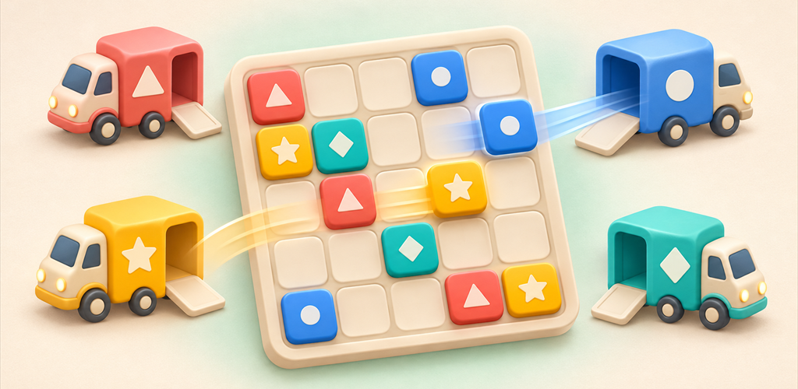
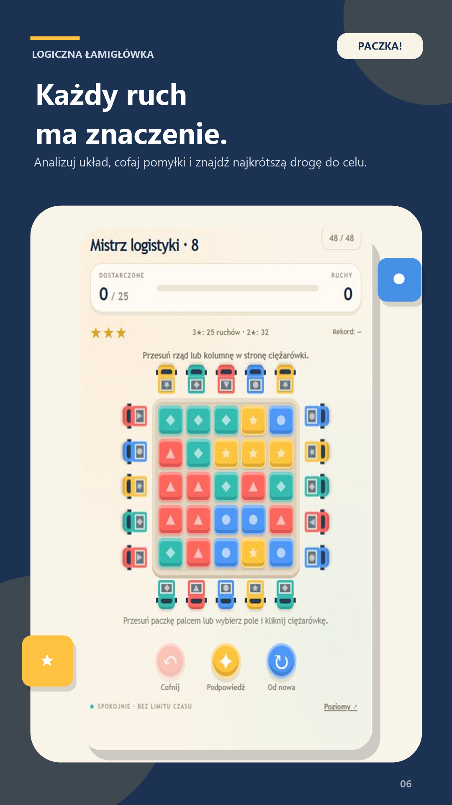
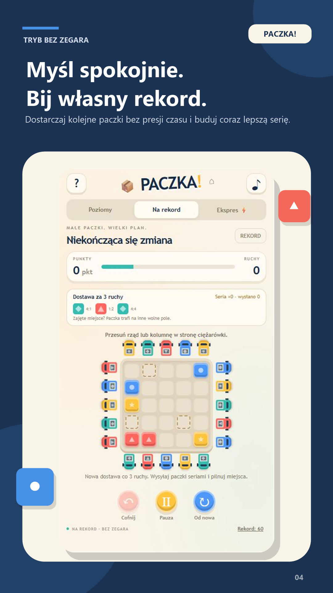
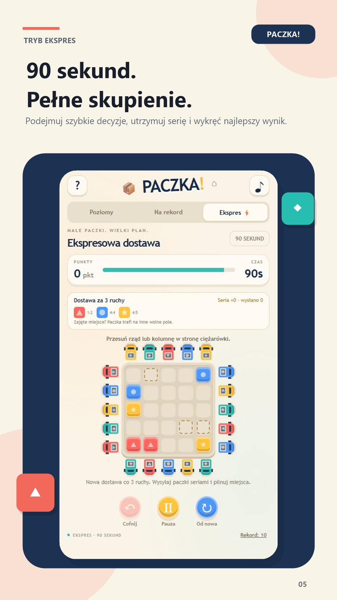

Poruszaj całą linię
Jeden gest przesuwa cały rząd albo kolumnę. Puste miejsca też mają znaczenie.
Gra logiczna · Android · wersja testowa
Przesuwaj całe rzędy i kolumny. Otwieraj drogę do ciężarówek w odpowiednich kolorach. Jedna prosta zasada — coraz więcej sposobów, żeby pomyśleć o ruch do przodu.

Prosta zasada
Plansza ma pięć rzędów i pięć kolumn. Paczka może opuścić magazyn tylko przez ciężarówkę w pasującym kolorze.
Jeden gest przesuwa cały rząd albo kolumnę. Puste miejsca też mają znaczenie.
Kolor i symbol paczki muszą pasować do ciężarówki przy krawędzi planszy.
Niewłaściwa paczka blokuje ruch całej linii. Najkrótsze rozwiązanie wymaga patrzenia kilka kroków naprzód.
Kampania ocenia rozwiązanie od jednej do trzech gwiazdek i zapamiętuje najlepszą liczbę ruchów.
Aplikacja w praktyce
Materiały przedstawiają prawdziwy interfejs wersji 0.3.0. Kliknij ekran, aby zobaczyć go w pełnym rozmiarze.
Trzy sposoby na planszę

48 plansz, podpowiedzi, cofanie ruchów i 144 gwiazdki do zdobycia.

Bez zegara. Kolejne dostawy, serie i rosnący wynik — dopóki wystarczy miejsca.

90 sekund na najlepszy wynik. Pauza zatrzymuje czas, a każdy ruch ma znaczenie.
Gra bez dodatków
Paczka! nie zawiera reklam, zakupów ani analityki. Cała gra działa na urządzeniu, a postęp, rekordy, ustawienia i rozpoczęta runda są zapisywane wyłącznie lokalnie.
Wersja 0.3.0 gotowa do kolejnego etapu
Pakiet na Androida i materiały sklepu są przygotowane. Następny krok to test wewnętrzny, zamknięte testy w Google Play i poprawki wynikające z prawdziwej rozgrywki.